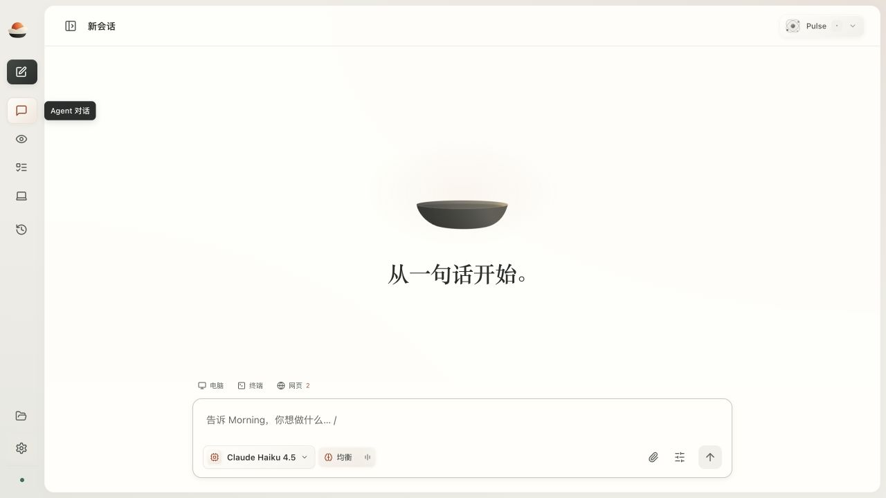
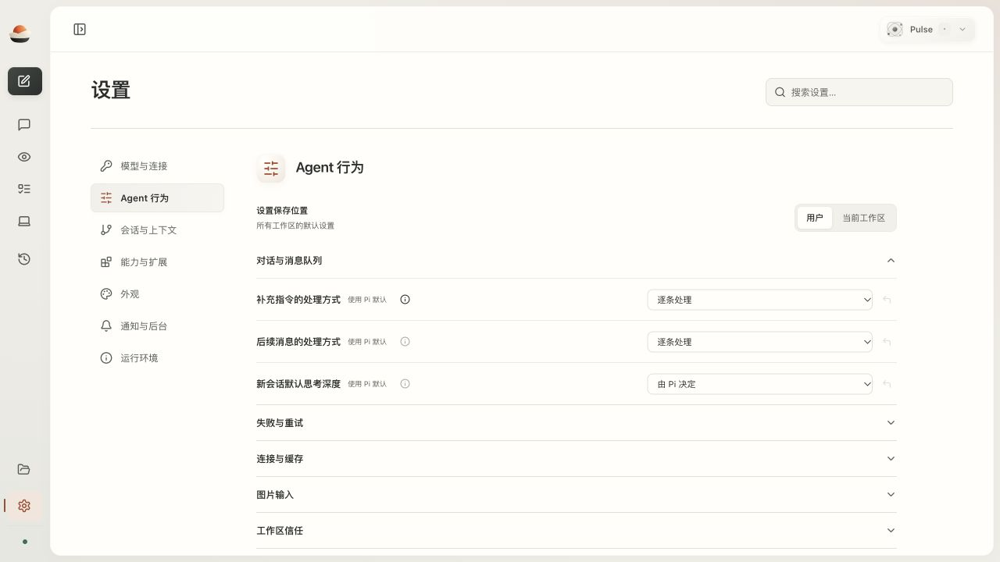
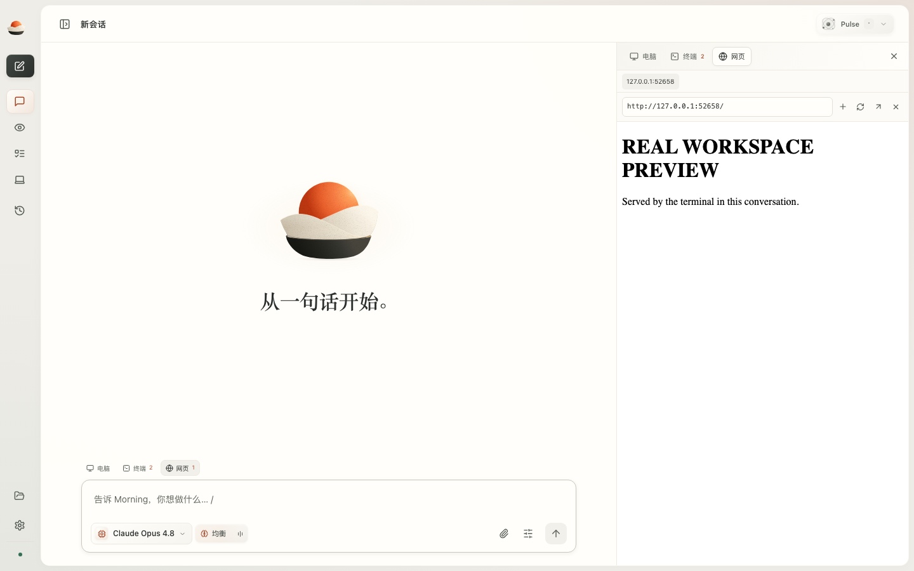

2026-10-11 · 本地代码与真实运行证据。电脑完整操作链路仍有上游兼容阻碍。
789 项后端、83 项界面、11 项 Node 回归通过。两个真实 Pi Agent 重叠执行约 30 秒；单会话两次原生 bash 工具调用重叠约 3 秒。
限定场景已验证
{
"area": "Agent → 原生会话 → 并发与恢复",
"status": "限定场景已验证",
"files": [
"packages/wakecore/src/wakecore/app/pulse/native_sessions.py",
"packages/wakecore/src/wakecore/adapters/agent_runtime/native.py",
"apps/agent-runtime/native-bootstrap.mjs"
],
"implemented": [
"每个已载入会话拥有独立 Pi 原生运行时，保留工具、扩展、上下文、历史和消息队列",
"切换页面不会中止其他会话；按会话停止；默认载入上限 4，可设置 2–8",
"浏览器标签页绑定会话，草稿按会话保存，迟到响应不覆盖另一段会话",
"空会话重启保留模型与思考深度；有对话的会话沿用 Pi JSONL，不修改原生保存语义"
],
"native_retained": "Pi 默认的 parallel 工具调度不变；不另外建立 Agent loop。"
}本地 macOS 闭环已验证
{
"area": "任务 → 终端 / 网页 → 生命周期",
"status": "本地 macOS 闭环已验证",
"files": [
"apps/agent-runtime/terminal-worker.mjs",
"packages/wakecore/src/wakecore/app/pulse/workspace.py",
"apps/pulse/src/TerminalPane.tsx",
"apps/pulse/src/PreviewPane.tsx",
"apps/pulse/src/WorkArea.tsx"
],
"implemented": [
"node-pty 承担 PTY；xterm.js 承担终端显示、输入、尺寸适配和链接",
"多个真实终端并行，关闭面板不停止进程；停止一个不影响另一个",
"启动和输入请求去重，输出有界，断线按位置续读，重启不重放命令",
"真实本地 HTTP 服务可从终端链接进入任务旁预览",
"新增能力通过 morning_terminal / morning_preview 原生扩展工具供 Pi 调用"
],
"limits": [
"目前应用适配层只开放 POSIX 终端；Windows、远程 PTY 未验收",
"第三方页面可能禁止 iframe；保留新标签入口，不伪报页面加载成功"
]
}部分实现，真实操作验收未通过
当前 codex-computer-use-mcp 0.5.2 / 官方客户端 1001425 在请求完整观察时仍返回 unchanged/diff 摘要；官方 get_app_state schema 当前只声明 app 参数。需要上游完整观察兼容支持，再验收真实点击、重新观察和自动续接。没有将按钮申请或截图当作操作完成。
{
"area": "Computer → 对话步骤 → 授权 / 排队 / 核验",
"status": "部分实现，真实操作验收未通过",
"files": [
"apps/pulse/src/ComputerInspector.tsx",
"packages/wakecore/src/wakecore/app/pulse/platform.py",
"packages/wakecore/src/wakecore/app/pulse/devices.py",
"packages/wakecore-ui-runtime/src/wakecore_ui_runtime/desktop/tree.py",
"packages/wakecore-ui-runtime/src/wakecore_ui_runtime/desktop/node.py"
],
"implemented": [
"电脑预览与批准放入原任务流程，移除独立 Computer 导航入口",
"观察按应用与观察 ID 分离；同一设备的操作排队，其他 Agent 和终端继续",
"高编号文件描述符下的真实节点启动已验证；启动等待有时限并清理资源",
"上游返回局部变化摘要时明确阻止操作，禁止当作完整观察"
],
"blocker": "当前 codex-computer-use-mcp 0.5.2 / 官方客户端 1001425 在请求完整观察时仍返回 unchanged/diff 摘要；官方 get_app_state schema 当前只声明 app 参数。需要上游完整观察兼容支持，再验收真实点击、重新观察和自动续接。没有将按钮申请或截图当作操作完成。"
}已实现并检查实际页面
{
"area": "Web Console → 信息层级 → 去除常驻解释",
"status": "已实现并检查实际页面",
"files": [
"apps/pulse/src/App.tsx",
"apps/pulse/src/Settings.tsx",
"apps/pulse/src/NativePreferences.tsx",
"apps/pulse/src/FieldHelp.tsx",
"apps/pulse/src/StatusBar.tsx",
"apps/pulse/src/Gateways.tsx",
"apps/pulse/src/NativePi.tsx"
],
"implemented": [
"移除 Pi 原生会话 / 自动保存 / Enter 发送 / Shift+Enter 换行常驻页脚",
"移除预览并行说明、终端收起说明、导航与分类重复标题、Pulse 宣传式说明、空状态长篇解释",
"参数帮助使用原生 details 按需展开；保留实际错误、等待条件、授权范围和运行状态",
"暖白紧凑布局，工作区收起动画、移动端底部工作区与键盘入口保持可用"
]
}


.venv/bin/python -m pytest tests --ignore=tests/ui -q .venv/bin/python -m pytest tests/ui -q npm --prefix apps/agent-runtime test npm --prefix apps/pulse run build .venv/bin/python scripts/verify_task_workspace.py --output /tmp/morning-live-proof.json